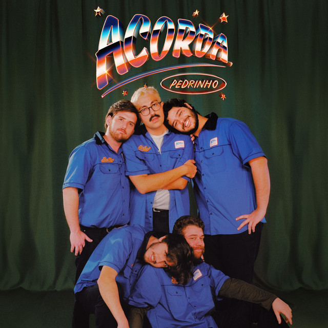

Pedrinho: vocal principal, que também é o nome da música.
Biel: outro membro importante do grupo, que também aparece nas produções e composições.
Compositores:
Lá Vem o Sol: A maioria da letra foi criada pelos próprios membros do grupo. Eles usaram sua vivência e experiências para criar o estilo único da música.
Produtores:
Perrone: foi o produtor musical da faixa. Ele teve um papel crucial na criação da base sonora da música.
DJ Gorky: também esteve envolvido na produção da parte sonora da música, com destaque para a batida que fez a música viralizar.
O videoclipe da música, que também ajudou a impulsionar o sucesso, teve a direção de:
Kadu Azevedo: o diretor do clipe. Ele ajudou a dar vida à ideia da música, trazendo o conceito do "acorda Pedrinho" para as imagens, usando uma estética colorida e com várias cenas descontraídas.
